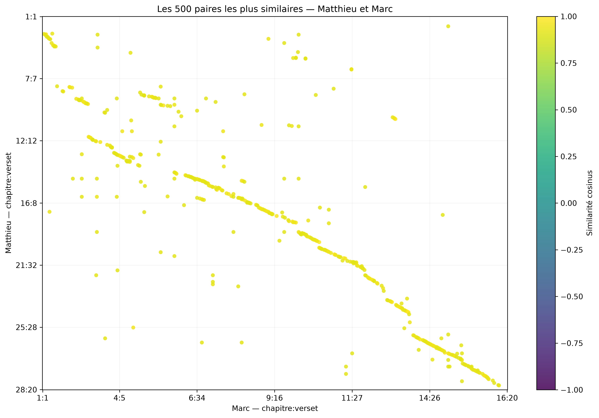
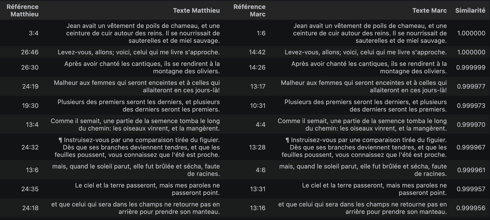
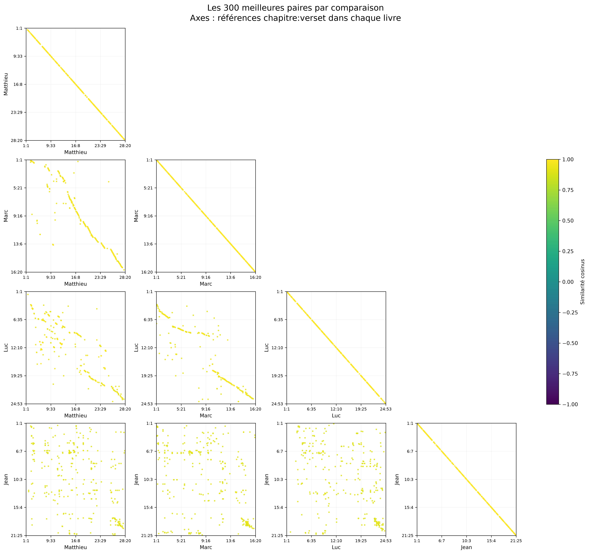
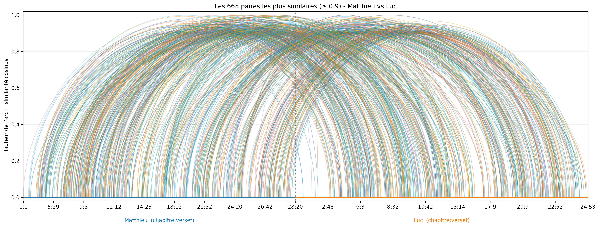
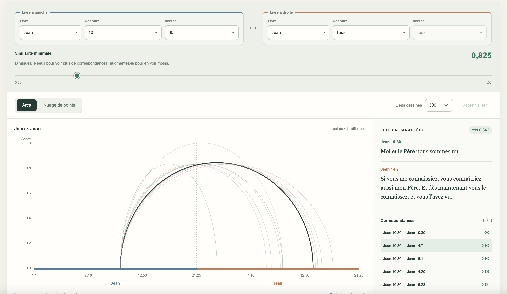

CARNET D’EXPLORATION · 6 MIN DE LECTURE
Les Évangiles vus à travers leurs ressemblances
Que voit-on lorsqu’on compare les versets des quatre Évangiles avec des embeddings ?
3 779 versets de la traduction Louis Segond 1910, encodés avec mistral-embed par un
traitement en batch. Chaque verset est représenté par un vecteur de 1 024 dimensions. Les
similarités cosinus entre ces vecteurs sont ensuite précalculées. Aucun modèle n’a été entraîné pour
cette exploration.
Matthieu et Marc : des correspondances qui suivent le récit
Un premier graphique fait apparaître une structure nette. Les 500 paires de versets les plus similaires entre Matthieu et Marc forment plusieurs alignements, séparés par des ruptures et accompagnés de points isolés.

Ces alignements suggèrent une structure narrative et textuelle commune : plusieurs passages racontent les mêmes épisodes, souvent dans le même ordre et avec des formulations très proches. Concrètement, quand on avance dans Marc, les versets correspondants avancent aussi dans Matthieu : les points dessinent alors une diagonale. Ce sont donc des suites de passages qui se répondent, et pas seulement des phrases isolées qui se ressemblent. Les axes suivent l’ordre du texte, pas une chronologie datée des événements.
Les décalages invitent aussi à la lecture. Ils peuvent signaler un passage placé ailleurs, une formulation récurrente ou une proximité de thème. Le graphique seul ne permet pas de choisir entre ces explications.
Derrière les points, des textes parfois identiques
Revenir aux textes permet de comprendre ce que mesure le score. Dans les premiers résultats, Matthieu 3:4 et Marc 1:6 décrivent Jean avec exactement les mêmes mots dans cette traduction : son vêtement de poils de chameau, sa ceinture de cuir et sa nourriture.

Un score proche de 1 est ici facile à interpréter. Pour d’autres paires, la ressemblance peut être moins littérale : un même lieu, une même question ou une scène voisine. Le score sert à repérer des candidats ; la lecture permet de comprendre leur lien.
Jean dessine un autre profil
Matthieu, Marc et Luc sont appelés les Évangiles synoptiques. Le mot « synoptique » renvoie à l’idée de « voir ensemble » : ces trois récits peuvent être lus côte à côte parce qu’ils partagent de nombreux épisodes, souvent présentés dans un ordre comparable et avec des formulations proches. Les alignements rendent cette proximité visible, particulièrement entre Matthieu et Marc. Avec Luc, les suites sont plus fragmentées : une trame commune n’implique pas une organisation identique de tous les passages.

La dernière ligne de la matrice contraste avec ces alignements : les correspondances entre Jean et les trois autres Évangiles forment un nuage plus dispersé. Les passages rapprochés ne se succèdent pas aussi régulièrement dans le même ordre. Cela suggère une organisation différente du récit : Jean ne reprend pas simplement la même succession de scènes. On retrouve des points de rencontre, mais ils dessinent moins souvent une progression parallèle sur l’ensemble du livre.
Les diagonales des comparaisons d’un livre avec lui-même ont un autre sens : un verset associé à lui-même occupe la même position sur les deux axes, avec un score égal ou très proche de 1. C’est un résultat attendu du calcul, pas une découverte sur la structure du récit.
Les alignements entre livres rendent donc visible une base narrative commune aux synoptiques, tandis que la dispersion avec Jean souligne un profil différent. Ils ne permettent toutefois pas de déterminer qui s’est inspiré de qui, ni d’affirmer que Jean est totalement indépendant des autres textes.
Un détail essentiel : chaque case contient les 300 meilleures paires. On compare donc leur répartition, pas le nombre total de ressemblances. Une zone vide signifie qu’aucune paire de cette zone ne figure dans cette sélection, pas que les passages n’ont aucun lien.
Vers la fin, des rapprochements autour de la Passion
Dans la dernière ligne de la matrice, un regroupement attire l’attention vers la fin des livres. L’examen de certaines paires entre Marc et Jean permet de lui donner un contenu concret.
Marc 15:17 ↔ Jean 19:2
Les deux versets évoquent la pourpre et la couronne tressée, avec un ordre de formulation différent.Marc 15:22 ↔ Jean 19:17
Le lieu et son nom rapprochent les passages ; Jean précise que Jésus porte sa croix.Marc 15:27 ↔ Jean 19:18
Deux autres hommes sont crucifiés avec Jésus, placés de part et d’autre.Le contraste avec Jean n’est donc pas uniforme : vers la fin, des correspondances se regroupent autour de scènes communes de la Passion. Le procès, les moqueries et la crucifixion font se retrouver des personnages, des lieux et des actions similaires. Les exemples ci-dessus donnent un sens concret à ce rapprochement visuel : malgré des parcours narratifs différents, les récits se rejoignent sur ces épisodes. Cela ne signifie pas qu’ils les racontent de façon identique dans tous leurs détails, ni que tous les points du regroupement représentent la même scène.
Suivre les liens avec les arcs
Une autre représentation place les versets de Matthieu, puis ceux de Luc, sur un même axe. Chaque arc relie une paire ; sa hauteur correspond au score de similarité.

Cette vue permet de suivre les liens entre les deux textes. Avec beaucoup de correspondances, les arcs se superposent : l’explorateur permet de relever le seuil ou de choisir un chapitre et un verset pour regarder un ensemble plus réduit.
On peut aussi chercher des correspondances à l’intérieur d’un même livre. Par exemple, sélectionnons Jean 10:30 à gauche — « Moi et le Père nous sommes un. » — et Jean à droite, en conservant tous les chapitres et versets. Avec un seuil de 0,825, l’explorateur affiche ici 11 paires, dont le verset comparé à lui-même.

Parmi les résultats, Jean 14:7 dit : « Si vous me connaissiez, vous connaîtriez aussi mon Père. Et dès maintenant vous le connaissez, et vous l’avez vu. » Le rapprochement porte ici sur la relation entre Jésus et le Père, exprimée de deux façons différentes : l’unité dans Jean 10:30, et la connaissance du Père à travers Jésus dans Jean 14:7. L’outil permet ainsi de suivre un thème au sein du livre, au-delà des seuls récits parallèles.
À vous de suivre les correspondances
Choisissez deux livres, ajustez le seuil et ouvrez une paire pour lire les deux versets.
Explorer les correspondances →